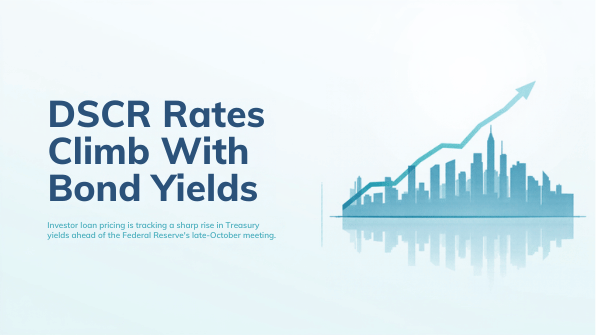
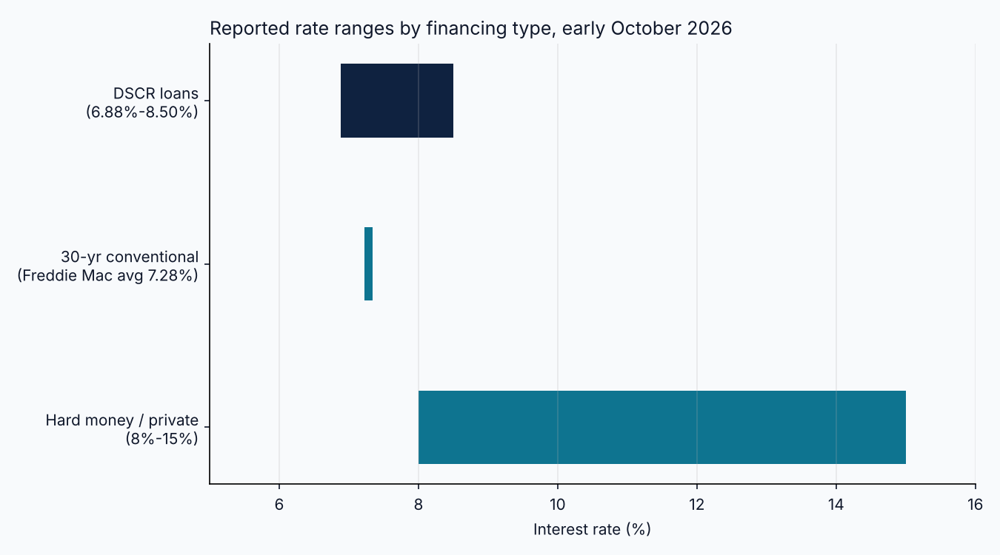

DSCR Rates Span 6.88% to 8.50% as the 30-Year Mortgage Hits 7.28%

Investor financing costs moved higher into the first week of October. According to Freddie Mac's Primary Mortgage Market Survey released October 1, the average 30-year fixed mortgage rate reached 7.28%, up from 7.03% the prior week and 6.34% a year earlier. That is the highest reading since November 2023. The 15-year fixed average rose to 6.6%. The move reflects higher bond yields, with the 10-year Treasury near 5.23% on the day of the release.
DSCR loans, which qualify a borrower on a property's rental income rather than personal income, are priced off the same rate environment but carry a spread for investor risk. One published rate sheet, with pricing tiers effective September 29, shows DSCR rates spanning 6.88% to 8.50%. Where a given loan lands depends on FICO tier, LTV tier, DSCR, loan amount, transaction purpose, prepayment selection, property type, and state. Because that range reflects borrower tiers and a different product than the Freddie Mac owner-occupant survey, the two figures should not be compared as a like-for-like spread.
Private and hard money financing sits well above both. One lender survey published in June reported hard money rates of 8% to 15% annually, with origination points of 1% to 4% of the loan amount and maximum loan-to-value generally in the 65% to 75% range. Those figures are older than the September and October data above, so they are best read as a structural reference for short-term bridge capital rather than a current quote.

The macro calendar adds uncertainty. The Federal Open Market Committee meets October 27 and 28, with the decision due at 2:00 PM Eastern on October 28. One calendar source lists the current federal funds target range at 3.75% to 4%. Another rate commentary noted the 2-year Treasury, a common base for DSCR pricing, near 4.39% as of September 17, its highest level since January 2025. With long-term yields rising, investors should not assume that a Fed decision alone will pull investor loan pricing lower.
For investors and lenders evaluating deals this week, the practical consequence is arithmetic. A higher note rate raises debt service, which lowers the DSCR on a property with unchanged rent. A deal that cleared a 1.20 coverage threshold at a 6.9% rate may fall short at 8.0%, and a lower LTV or a larger equity contribution may be required to restore it. Lenders reviewing pipelines face the same pressure in reverse, as borrowers who qualified weeks ago may no longer meet program minimums.
Rates will keep moving with Treasury yields and the October 28 Fed decision. The more durable discipline is to test each deal against a range of rate scenarios before committing time and capital, and to keep the coverage and equity assumptions current as pricing changes.